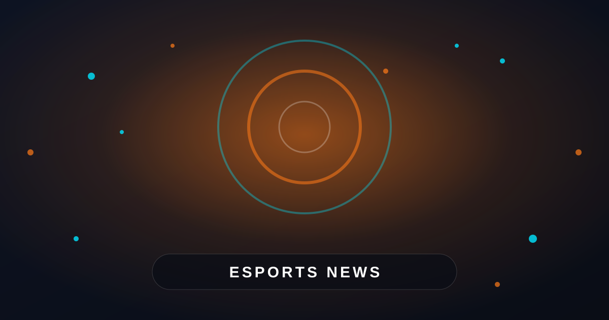

YEKINDAR questions reports about his future
The latest YEKINDAR transfer news centers on a short but revealing response to public speculation. Reports had suggested that the Latvian rifler had several opportunities available, but YEKINDAR indicated that this information had not reached him directly.
Speaking in comments reported by HLTV, YEKINDAR reacted to the discussion with humor rather than confirming a specific offer or destination. His response does not prove that no teams are interested, but it does suggest that the public picture may be ahead of the formal talks.
I saw news that ‘YEKINDAR has many options.’ Somebody forgot to tell me, I guess.
What the comment means for the transfer market
In esports, transfer reports often appear before negotiations are complete. A player can be linked with multiple teams because organizations are exploring possibilities, agents are speaking with potential employers, or insiders are sharing early information. None of those stages guarantees that a contract will be signed.
YEKINDAR’s answer therefore leaves several outcomes open. He could still be considering offers, waiting for a roster decision, or dealing with discussions that are less advanced than outside reports suggest. The comment is best understood as a correction to the confidence of the rumors, not as a final announcement.
Why teams continue to watch YEKINDAR
YEKINDAR remains a notable name in competitive Counter-Strike because of his aggressive approach, experience at major events, and ability to create space for teammates. His entry-focused style can change the pace of a round, especially when a team needs a player willing to take the first fight.
That style can also make roster decisions complicated. A team must build its tactics around his timing, utility support, and preferred positions. When the system works, YEKINDAR can be a major source of opening kills and momentum. When it does not, his impact may be harder to maintain from map to map.
His background with high-level organizations, including Virtus.pro and Team Liquid, gives him experience in different team structures and international environments. That history can make him attractive to teams seeking proven firepower, while also raising questions about the role and support he would receive in a new lineup.
The next steps for YEKINDAR and interested teams
The most important development will be an official roster announcement. Until a team confirms a signing, YEKINDAR’s status should be treated as unresolved. Statements from the player, his representatives, or an organization will carry more weight than lists of rumored options.
Teams evaluating him will likely consider more than his individual statistics. They may assess how he fits their leadership structure, whether his aggressive role overlaps with another star, and how quickly he can adapt to the team’s map pool and communication system.
What fans should take from the latest update
For now, YEKINDAR’s message is a reminder that transfer stories can develop unevenly. A headline may describe a player as having numerous options, while the player himself may still be waiting for a clear proposal or a decision from the teams involved.
The situation should become easier to understand once the next roster cycle produces official news. Until then, fans can follow confirmed reports while avoiding assumptions about a move to any particular organization. YEKINDAR’s light-hearted reaction keeps the story interesting, but it is not a confirmation of where he will compete next.
For readers who also enjoy improving their skills in basketball games, our guide How to Improve Your Basketball Shooting: 7 Simple Tips offers practical advice on accuracy, timing, and shot selection: https://dhyey.bond/blog/how-to-improve-basketball-shooting/
See Also
If you enjoyed this Esports News article, check out How to Improve Your Basketball Shooting: 7 Simple Tips for more useful reading.